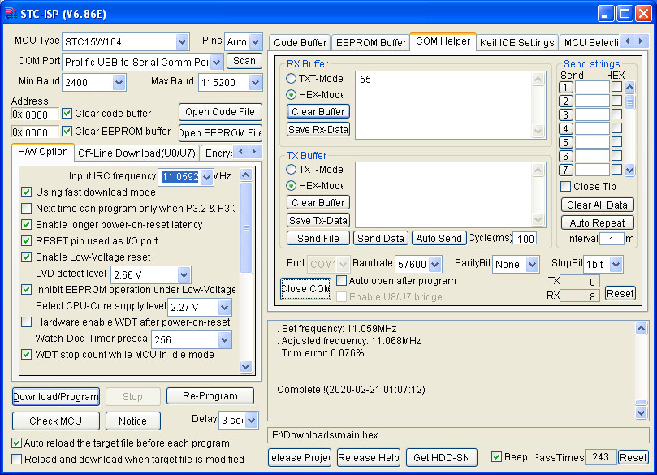

參考資訊：
http://plit.de/asem-51/
https://github.com/nimaltd/w25qxx
http://www.stcisp.com/stcisp620_off.html
https://sourceforge.net/projects/mcu8051ide/
https://www.winbond.com/resource-files/w25q64fw_revk%2007012016%20sfdp.pdf
main.s
uart_tx set p3.1
spi_cs set p3.4
spi_do set p3.5
spi_di set p3.2
spi_clk set p3.3
.org 0h
jmp _start
.org 100h
_start:
setb spi_cs
setb spi_do
setb spi_di
setb spi_clk
mov r2, #0
mov r1, #0
mov r0, #0
call w25q64_erase_sector
mov r2, #0
mov r1, #0
mov r0, #0
mov a, #55h
call w25q64_write_byte
mov r2, #0
mov r1, #0
mov r0, #0
call w25q64_read_byte
call uart_tx
jmp $
w25q64_wait_busy:
clr spi_cs
w0:
mov a, #5
call spi_txrx
call spi_txrx
anl a, #1
cjne a, #0, w0
setb spi_cs
ret
w25q64_write_enable:
clr spi_cs
mov a, #6
call spi_txrx
setb spi_cs
ret
w25q64_erase_sector:
push 0
push 1
push 2
call w25q64_write_enable
clr spi_cs
mov a, #20h
call spi_txrx
pop acc
call spi_txrx
pop acc
call spi_txrx
pop acc
call spi_txrx
setb spi_cs
call w25q64_wait_busy
ret
w25q64_write_byte:
push acc
push 0
push 1
push 2
call w25q64_write_enable
clr spi_cs
mov a, #2h
call spi_txrx
pop acc
call spi_txrx
pop acc
call spi_txrx
pop acc
call spi_txrx
pop acc
call spi_txrx
setb spi_cs
call w25q64_wait_busy
ret
w25q64_read_byte:
push 0
push 1
push 2
clr spi_cs
mov a, #03h
call spi_txrx
pop acc
call spi_txrx
pop acc
call spi_txrx
pop acc
call spi_txrx
call spi_txrx
setb spi_cs
ret
spi_txrx:
mov r0, #8
mov r1, a
mov r2, #0
s0:
clr spi_clk
mov a, r1
rlc a
mov r1, a
jc s1
clr spi_di
sjmp s2
s1:
setb spi_di
s2:
setb spi_clk
jb spi_do, s3
clr c
sjmp s4
s3:
setb c
s4:
mov a, r2
rlc a
mov r2, a
djnz r0, s0
mov a, r2
ret
; 57600,N,8,1
; RC 11.0592MHz
uart_tx:
mov r0, #8
clr uart_tx
mov r1, #44
djnz r1, $
u0:
rrc a
jc u1
clr uart_tx
sjmp u2
u1:
setb uart_tx
u2:
mov r1, #44
djnz r1, $
djnz r0, u0
setb uart_tx
mov r1, #44
djnz r1, $
ret
.end
編譯
$ mcu8051ide --compile main.s
完成
